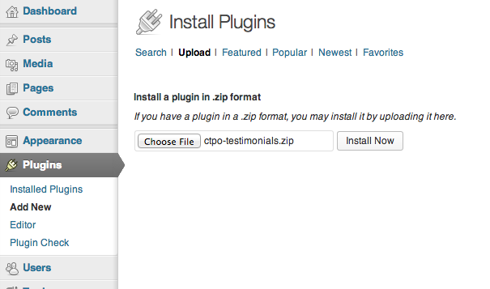
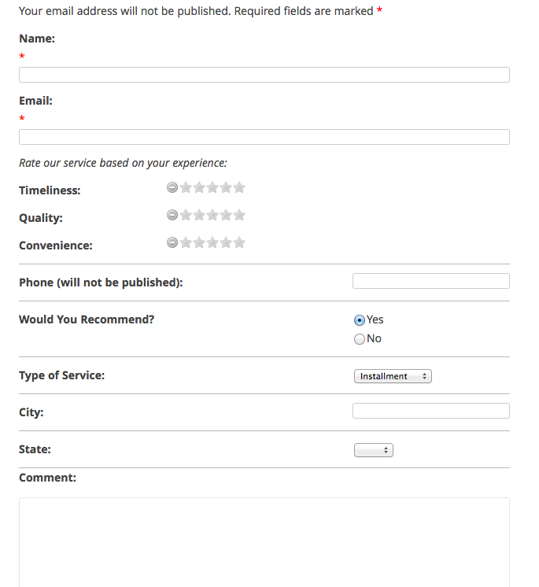
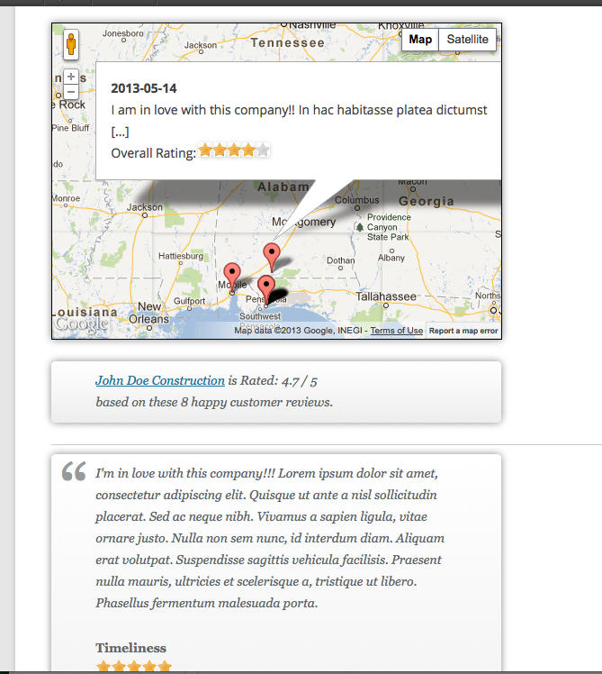
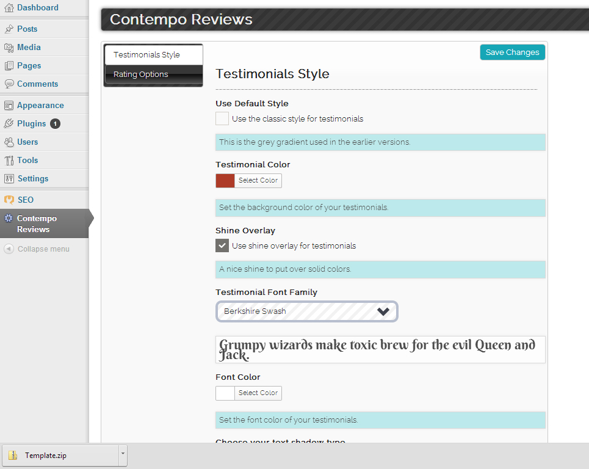
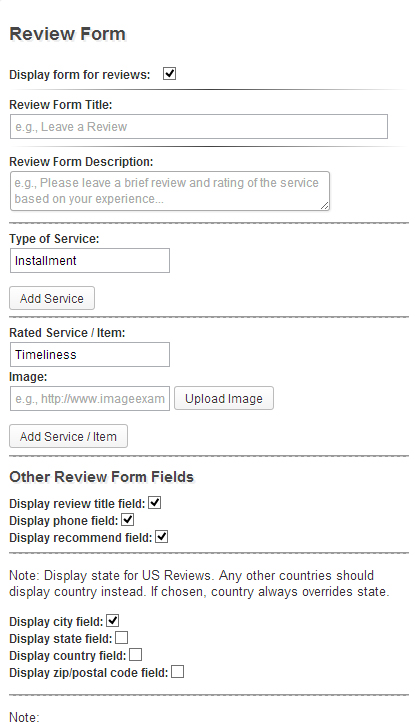
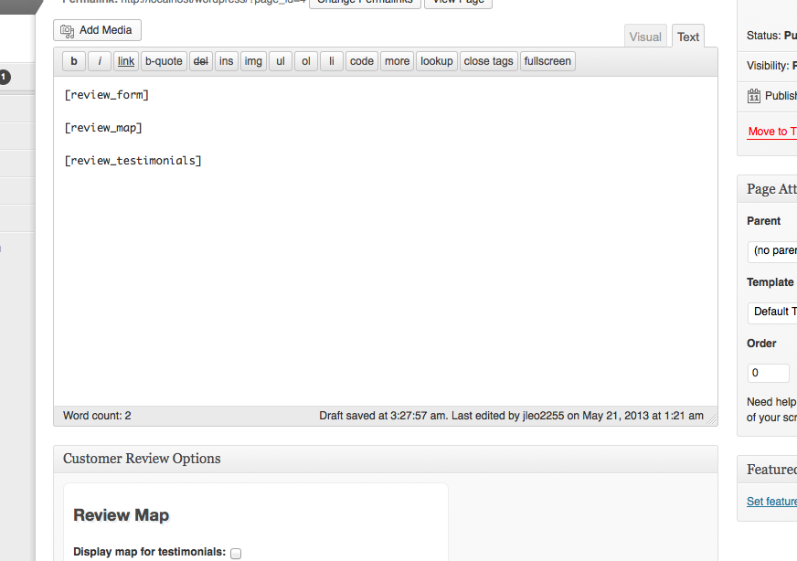
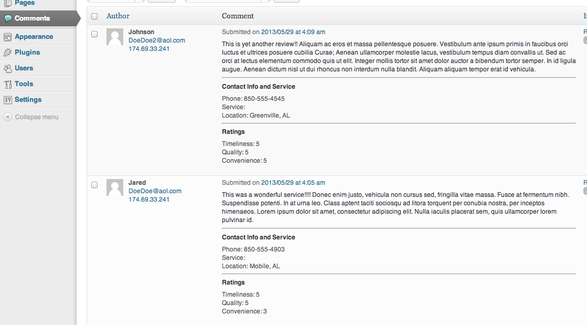
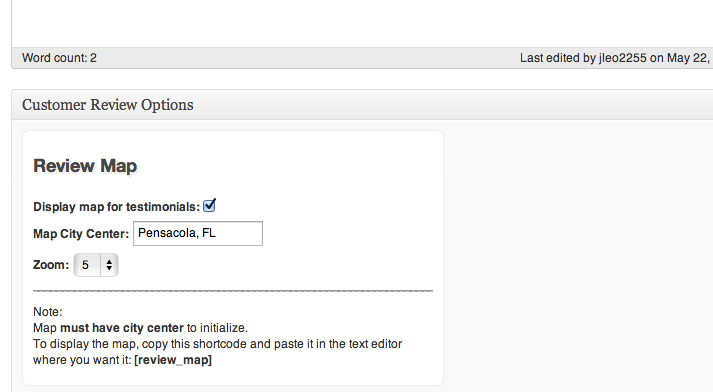
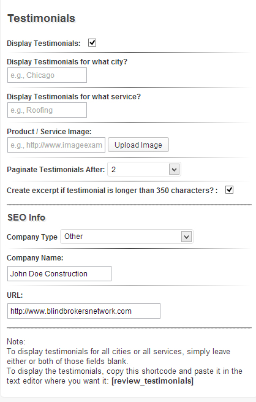

The best option for a Wordpress review system that produces seo rich testimonials.
To install the Contempo Reviews plugin on your Wordpress site, simply go to the plugins page and click 'upload' at the top. Then, select the zipped file, click "Install Now," and activate.

Contempo Reviews is an excellent plugin for creating a review form and then displaying those reviews both on a map and as styled, rated testimonials. The testimonials are seo-ready and look fantastic in all major browsers and mobile devices.
This is how the user would experience this plugin once installed on your site:
Step 1: User leaves a review

Step 2: After the review is approved by the wordpress admin in the comments area, the review can be displayed on a map and as a styled, seo-friendly testimonial

Step 1: Style your review form however you want, by clicking on the "Contempo Review" menu on the left.

here you can choose from a variety of options. They are as follows:
Step 1: Go to the page or post you would like to include the review form on, and in the "Customer Review Options" box, click "Display Review Form" checkbox and input the options you would like.

The options for this review form include:
Step 2: copy and paste the [review_form] shortcode:

To approve the reviews your site receives, simply go to the "comments" section in wordpress, hover over the review you would like to approve, and click "Approve."

This Plugin uses the pages, posts and custom post types of Wordpress to provide an easy interface for managing your review maps. All you have to do is set the city/town center of the map in the page options and the zoom (1 is zoomed all the way out, and 12 is zoomed all the way in).
Here are some easy to follow step-by-step instructions:
Step 1: Choose your settings in the page options area

Step 2: Copy and Paste the [review_map] Shortcode (feel free to use any combination of shortcodes you see fit):
Again, the testimonial settings are built into the pages, posts and custom post types of Wordpress upon installation. Simply choose your settings, the city/town and/or service you would like the testimonials to display for and the "Reviews" will populate for that area/service.
Important: To display testimonials for ALL cities or ALL services/items, simply leave those fields blank.

The review testimonial options include